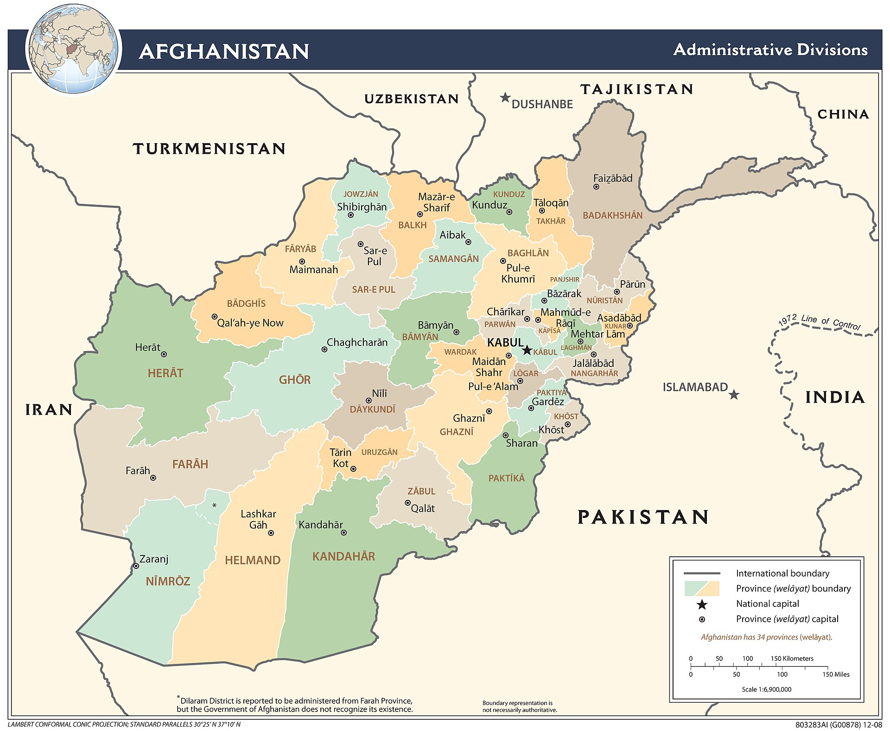

Memorial

Over 2,400 U.S. service members lost their lives during operations in Afghanistan from 2001 to 2021. This memorial honors each of them.
Submit a Tribute
About
The Afghanistan Veterans Memorial is dedicated to preserving the memory of U.S. service members who made the ultimate sacrifice during the Global War on Terror in Afghanistan.
This project aims to provide an interactive way to explore and remember the fallen by location, unit, year, and rank.